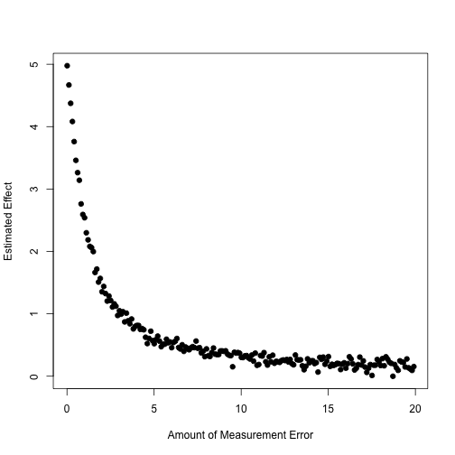

plot(sdevs,eff,xlab='Amount of Measurement Error',ylab='Estimated Effect',pch=19)

Sensitivity Analysis
I’m going to walk you through how to do a generalized version of the Imbens (2003) method.
It may be easier to use one of the canned routines for your homework, though.
We’re going to keep working with Pat’s data, since we already have it handy.
Imbens process:
Simulate (or imagine simulating) an unobserved confounder like the following: \(Y_d | X, U \sim \mathcal{N}(\tau d + \boldsymbol\beta'X + \delta U, \sigma^2)\) \(D | X, U \sim f(\boldsymbol\gamma'X + \alpha U)\) (with \(f\) known)
That is, \(Y_1, Y_0 \perp D | X, U\)
So we want to generate an additively linear confounder with both \(D\) and \(Y\).
Example
require(foreign)
d <-read.dta("gwdataset.dta")
## Warning in read.dta("gwdataset.dta"): value labels ('q2') for 'jan07_q2'
## are missing
zips <-read.dta("zipcodetostate.dta")
zips<-unique(zips[,c("statenum","statefromzipfile")])
pops <-read.csv("population_ests_2013.csv")
pops$state <-tolower(pops$NAME)
d$getwarmord <-as.double(d$getwarmord)
# And estimate primary model of interest:
out<-lm(getwarmord~ddt_week+educ_hsless+educ_coll+educ_postgrad+educ_dk+party_rep+party_leanrep+party_leandem+party_dem+male+raceeth_black+raceeth_hisp+raceeth_notwbh+raceeth_dkref+age_1824+age_2534+age_3544+age_5564+age_65plus+age_dk+ideo_vcons+ideo_conservative+ideo_liberal+ideo_vlib+ideo_dk+attend_1+attend_2+attend_3+attend_5+attend_6+attend_9+as.factor(doi)+as.factor(statenum)+as.factor(wbnid_num),d)
Generate a confounder
For our analysis, \(Y\) is belief in global warming and \(D\) is local variation in temperature.
We want to standardize these variables first.
d$getwarmord <-scale(d$getwarmord)
d$ddt_week <-scale(d$ddt_week)
genConfound<-function(alpha,delta) {
e <-rnorm(nrow(d),0,1)
U <-alpha *d$ddt_week +delta *d$getwarmord +e
return(U)
}
So we can vary partial correlations with \(D\) and \(Y\) by varying alpha and delta.
We’re adding to the discussion on post-treatment bias with a sensitivity analysis.
This is also in Rosenbaum (1984).
The variable which one might think could induce post-treatment bias in our example is that of “public acceptance”.
Rosenbaum Bounding
In general Rosenbaum is a proponent of trying to “bound” biases.
He does this in his “normal” sensitivity analysis method, and we do the same, here.
We will assume a “surrogate” for \(U\) (necessary for CIA), which is observed post-treatment.
The surrogate has two potential outcomes: \(S_1\) and \(S_0\)
It is presumed to have a linear response on the outcome.
(As are the other observed covariates)
This gives us the following two regression models: \(E[Y_1|S_1 = s , X = x] = \mu_1 + \beta' x + \gamma's\) and \(E[Y_0|S_0 = s , X = x] = \mu_0 + \beta' x + \gamma's\)
This gives us: \(\tau = E[ (\mu_1 + \beta' X + \gamma'S_1) - (\mu_0 + \beta' X + \gamma'S_0)]\)
Which is equal to the following useful expression: \(\tau = \mu_1 - \mu_0 + \gamma'( E[S_1 - S_0])\)
For us, this means that \(\tau = \beta_1 + \beta_2 E[S_1 - S_0]\)
(Re)introduce Example
require(foreign,quietly=TRUE)
d <-read.dta("replicationdataIOLGBT.dta")
#Base specification
d$ecthrpos <-as.double(d$ecthrpos)-1
d.lm <-lm(policy~ecthrpos+pubsupport+ecthrcountry+lgbtlaws+cond+eumember0+euemploy+coemembe+lngdp+year+issue+ccode,d)
d <-d[-d.lm$na.action,]
d$issue <-as.factor(d$issue)
d$ccode <-as.factor(d$ccode)
d.lm <-lm(policy~ecthrpos+pubsupport+ecthrcountry+lgbtlaws+cond+eumember0+euemploy+coemembe+lngdp+year+issue+ccode,d)
Back to Bounding
Our surrogate is public acceptance.
But it can be swayed by court opinions, right? This is at least plausible.
Let’s try and get some reasonable bounds on \(\tau\).
sdS <-sd(d$pubsupport)
Ediff <-c(-1.5*sdS,-sdS,-sdS/2,0,sdS/2,sdS,1.5*sdS)
tau <-coef(d.lm)[2] +coef(d.lm)[3]*Ediff
names(tau)<-c("-1.5","-1","-.5","0",".5","1","1.5")
tau